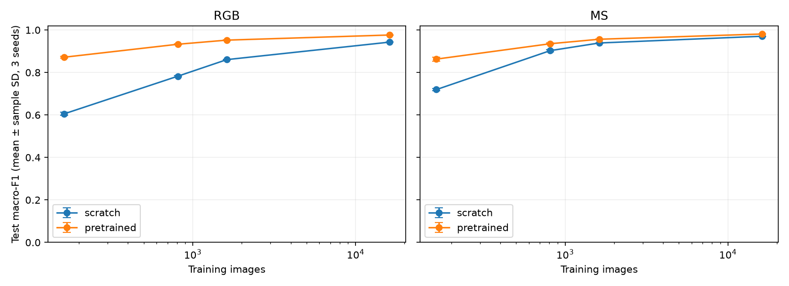
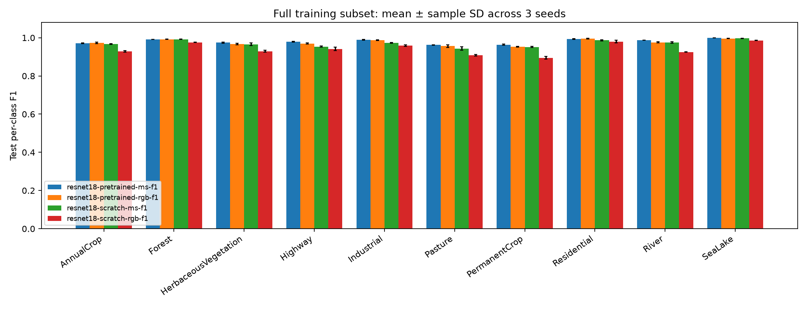

All listed conditions include seeds 42, 43 and 44. Error bars show training-seed sample SD. Validation results support model selection; test results are for final reporting.
Summary CSV · Every seed · Paired comparisons · Per-class summary · Per-class seed results

| Condition | Macro-F1 mean ± SD | Accuracy mean |
|---|---|---|
| compact-baseline | 0.9431 ± 0.0017 | 0.9450 |
| resnet18-pretrained-ms-f0.01 | 0.8629 ± 0.0097 | 0.8668 |
| resnet18-pretrained-ms-f0.05 | 0.9353 ± 0.0030 | 0.9377 |
| resnet18-pretrained-ms-f0.1 | 0.9564 ± 0.0010 | 0.9584 |
| resnet18-pretrained-ms-f1 | 0.9811 ± 0.0003 | 0.9819 |
| resnet18-pretrained-rgb-f0.01 | 0.8717 ± 0.0036 | 0.8755 |
| resnet18-pretrained-rgb-f0.05 | 0.9329 ± 0.0028 | 0.9349 |
| resnet18-pretrained-rgb-f0.1 | 0.9523 ± 0.0023 | 0.9542 |
| resnet18-pretrained-rgb-f1 | 0.9764 ± 0.0008 | 0.9775 |
| resnet18-scratch-ms-f0.01 | 0.7195 ± 0.0049 | 0.7333 |
| resnet18-scratch-ms-f0.05 | 0.9028 ± 0.0046 | 0.9064 |
| resnet18-scratch-ms-f0.1 | 0.9388 ± 0.0008 | 0.9410 |
| resnet18-scratch-ms-f1 | 0.9705 ± 0.0012 | 0.9720 |
| resnet18-scratch-rgb-f0.01 | 0.6051 ± 0.0075 | 0.6190 |
| resnet18-scratch-rgb-f0.05 | 0.7825 ± 0.0037 | 0.7933 |
| resnet18-scratch-rgb-f0.1 | 0.8605 ± 0.0007 | 0.8664 |
| resnet18-scratch-rgb-f1 | 0.9429 ± 0.0003 | 0.9452 |
